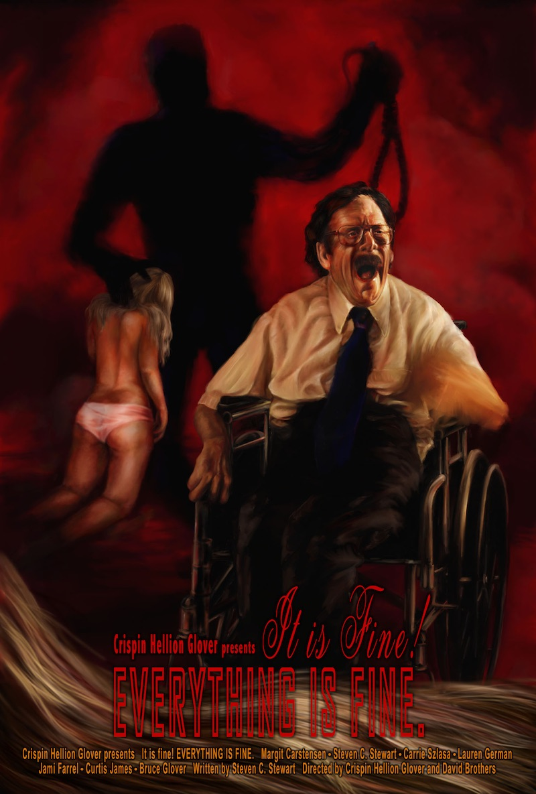

Crispin Glover's Big slideshow
Big slide show of that Kanazawa Film Festival 2008 has come back to Kanazawa!!
Continuous Image so far never seen anyone, Do not miss this opportunity!
Actor Crispin Glover who actives in Hollywood major epic. For his life work of the ""Big Slide Show"", he who holding the film across the United States for the box office. And, finally this time, coming back from Hollywood to Kanazawa! Show begins the slide show by Glover himself, movie screening, Q & A, finally it ends at autograph session.
9/24 (Sat) 21:30
Big Slide Show (60min)
"It Is Fine! Everything Is Fine." Screening
Q&A
Book autograph session
9/25 (Sun) 18:30
Big Slide Show (60min)
"What is it?" Screening
Q&A
Book autograph session
Films
It is Fine! EVERYTHING IS FINE.

2007 / USA / 74min
Director: Crispin Glover, David Brothers
Starring: Stephen · C · Stewart, Margit-Karusutensen
"The second film of ""IT"" trilogy. What is the crime that person with disabilities who feel a fetish desires to the woman of long hair commit? Depict the spirit and body of the handicap in the film noir of the illusion. A semi-autobiographical film of Stephen · C · Stewart who starring. M · Karusutensen who appeared in a number of Fassbinder films is co-starring. And also Glover's parents are co-starring.
What is it?

2005 / USA / 72min
Director, Screenplay, Cast: Crispin Glover
Starring: Michael Buribisu, Ricky Whitman
Crispin Glover's "IT" trilogy first film. He stare the world from the point of view that is not the mainstream of the general public. People with down syndrome and snail of the dark fantasy adventure. Glover also plays "God" who manipulate the world behind the scenes. Excessive director debut film that springing full of delusion of Glover which is said to be "the most eccentric actor of Hollywood".
Guest
Crispin Hellion Glover
Crispin Hellion Glover is a multifaceted American artist. He is primarily known as a film actor, but is also a publisher, filmmaker and author. His career has been marked by some portrayals of wonderfully eccentric people, such as George McFly in BACK TO THE FUTURE or Willard Stiles in WILLARD. In the late 1980s, Glover started his own publishing company Volcanic Eruptions which turned in to a production company in the 1990's for his film works.
Born in New York City, Glover moved to Los Angeles at the age of three and a half. As a child, he attended the Mirman School for the academically gifted. His father, Bruce Glover, is an actor best remembered for playing the offbeat SPECTRE assassin Mr. Wint in the James Bond movie DIAMONDS ARE FOREVER, and one of Jack Nicholson's hood assistants Duffy in CHINATOWN. Crispin Glover's first professional acting appearance was in 1978 in Los Angeles at the Dorothy Chandler Pavilion in “The Sound of Music.” He played Friedrich Von Trapp and Florence Henderson played Maria. He also appeared in some commercials and several sitcoms as a teenager, including “Happy Days” and “Family Ties.” His first film role was in 1983's MY TUTOR. He has a small role in RACING WITH THE MOON opposite Sean Penn. He also played the title role in an AFI film THE ORKLY KID, in which he portrayed a young man whose obsession with Olivia Newton-John raises the ire of his small-town neighbors. Later that year he appeared in FRIDAY THE 13th: The Final Chapter (1984) and then TEACHERS (1984). Also in 1984 came his breakout performance as as George McFly in Robert Zemeckis's BACK TO THE FUTURE. Glover did not participate in the film's two sequels. Nevertheless, Zemeckis used facial prosthetics on another actor to simulate Glover on screen, and inter-spliced small portions of footage from the original film. Glover sued the producers. Because of Mr. Glover's lawsuit there is a precedent and new laws in SAG so that actors and producers are not allowed to ever do this again.
BACK TO THE FUTURE was an international box office smash following its release in 1985. Glover followed the release of that film with RIVER’S EDGE. From that point, Glover pursued a defiantly individualistic path. His characters were notable for their peculiar personality traits and unconventional thought processes. He played Andy Warhol in Oliver Stone's THE DOORS in (1991) and has continued to play exceedingly eccentric types, e.g. the title characters in BARTLEBY (2001) and WILLARD (2003). He has received some considerable mainstream attention recently as the "Thin Man" in the Charlie's Angels films
In 1987, Glover appeared on Late Night with David Letterman to promote his new film RIVER’S EDGE, wearing a long wig and platform shoes. His bizarre appearance was exceeded only by his unusual behavior, which was thought by some to have been influenced by drugs, while others presume it was a conceptual art piece (the character has a similar look to the character he played later in 1990's RUBIN FROM RUBIN AND ED. After an attempt to challenge Letterman to an arm wrestling match, Glover feigned an impromptu karate kick just inches from Letterman's face. Letterman abruptly ended the segment and cut to commercial. The segment is available on youtube.com. Glover never formally explained his behavior while appearing on the show. The character appears again in the video for "Clowny Clown Clown" and seems to have made some recent appearances almost twenty years later also available inYouTube.com posts. It is also noted that in the film FRIDAY THE 13th: The Final Chapter Glover, when asked to perform a dance, performed a wild dance. This clip is also available on YouTube.com.
Kiichiro Yanashita
He was born 1963 in Osaka. University of Tokyo Engineering department graduation. English and American literature translator, film critic-murder researcher. The books which he translated are J · G · ballad "crash", R · A · Rafferty "Fourth Mansions", Alan Moore / J · H · Williams III "PROMETHEA 1" etc. Such as "New Century reading Encyclopedia," "massacre movie report"series are his writing books. Also "Actress Hayashi Yumika" is his edited work.